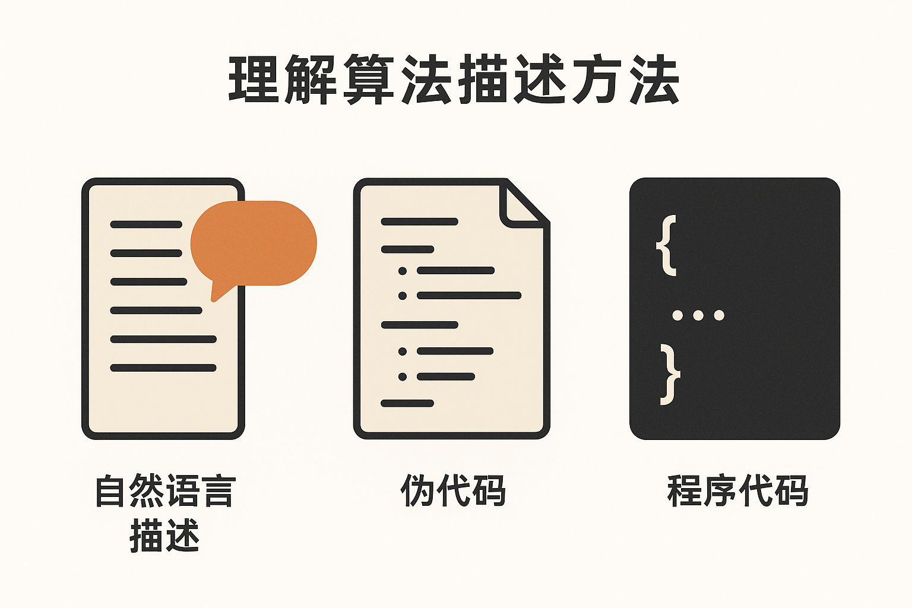
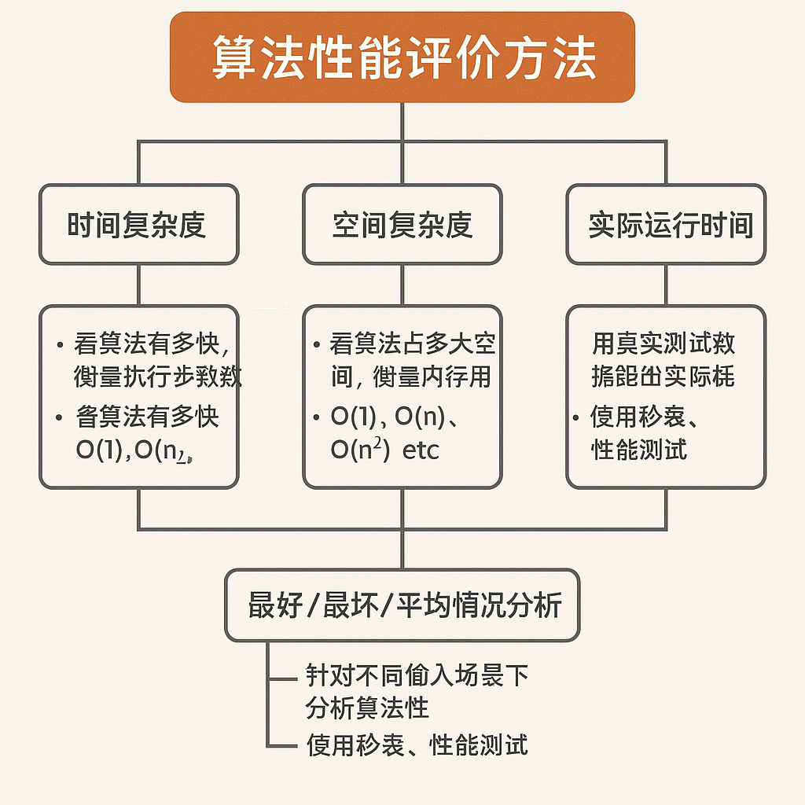

算法概述
一、算法的概念(考点)
在编程中，算法（Algorithm）是指解决某个问题的一系列明确的、有限的步骤或规则。
简单来说：
算法 = 解决问题的步骤 + 明确的执行顺序
生活中的算法例子
问题：泡一杯奶茶 算法可能是：
- 烧一壶水
- 取一个杯子
- 加入奶茶粉
- 倒入热水
- 搅拌均匀
- 完成
这就是一个“泡奶茶的算法”。
编程中的算法例子
问题：找出一组数字中最大的一个 算法可能是：
int max = numbers[0];
for (int i = 1; i < numbers.Length; i++)
{
if (numbers[i] > max)
{
max = numbers[i];
}
}
这个过程的每一步都清晰、有限，最终得到一个结果，这就是一个“求最大值”的算法。
编程中的算法是解决问题的明确、可执行的步骤序列，是计算机程序的逻辑核心。它定义了如何将输入数据转化为期望的输出结果，如同“菜谱”指导计算机一步步完成任务。
关键特征：
-
明确性（无歧义）
- 每一步操作必须清晰、精确，无二义性。
- 例： “将数组第一个元素与后续元素比较”而非“找最小的数”。
-
有限步骤（可终止）
- 必须在有限时间内结束，避免无限循环。
- 例： 二分查找在数组范围内逐步缩小搜索区域直至找到目标。
-
输入与输出
- 接受输入数据（如待排序的数组），产生确定输出（如排序后的数组）。
- 例： 输入
[3,1,2]→ 冒泡排序 → 输出[1,2,3]。
-
可行性（用基础操作实现）
- 步骤必须能由编程语言的基本指令（赋值、比较、循环等）组合实现。
- 例： 用
for循环 +if比较实现选择排序。
-
有效性（解决问题）
- 必须正确解决目标问题（如排序后数组有序）。
二、理解算法描述方法(考点)
“理解算法描述方法”这个说法，其实是指：
我们要学会如何准确地阅读、表达和书写一个算法的过程。
通俗说，就是你不但要能看懂别人写的算法，还要能自己清晰地写出算法，用人或计算机都能理解的形式。

常见的算法描述方法
| 描述方式 | 说明 | 举例 |
|---|---|---|
| 自然语言描述 | 用人类语言描述算法步骤，简单直观 | “从第一项开始，依次比较所有数字，找到最大的那一个” |
| 伪代码（Pseudo-code） | 介于自然语言和代码之间，更接近编程语言 | if a > b then max = a else max = b |
| 程序代码 | 用某种具体的编程语言书写的算法 | if (a > b) max = a; else max = b; |
举个例子：找出两个数中较大的数
1.自然语言描述：
输入两个数a和b，比较它们的大小，如果a大，就输出a；否则输出b。
2.伪代码描述：
3.C#代码实现：
为什么要学会“理解算法描述方法”？
- 阅读时：能看懂书本、老师或面试题中用各种方式写的算法
- 交流时：能准确讲出算法逻辑，团队沟通更顺畅
- 写程序时：能把思路转换为代码，避免逻辑错误
初学者建议：
- 多练习从自然语言 → 伪代码 → 真代码的转换过程
- 反复理解算法逻辑，而不是死记硬背
- 画流程图也是很好的描述方法，能帮助你理清思路
三、理解算法的设计步骤(考点)
“理解算法的设计步骤”意味着我们要掌握设计一个好算法的完整过程，不仅仅是照搬代码，而是从分析问题 → 拆解逻辑 → 逐步构建解决方案。
理解“算法的设计步骤”，就是掌握一套能独立思考并构造解法的流程，避免“看得懂但写不出”的尴尬。
算法设计的 5 个常见步骤：
| 步骤 | 名称 | 说明 |
|---|---|---|
| ① | 明确问题 | 弄清楚要解决什么问题，有哪些输入、输出、目标是什么 |
| ② | 分析需求与约束 | 输入数据范围大不大？是否有重复？要不要考虑效率？ |
| ③ | 设计算法思路 | 选择合适的策略：遍历、排序、递归、贪心、分治、动态规划等 |
| ④ | 描述算法过程 | 用自然语言、伪代码或流程图把算法步骤清晰写出来 |
| ⑤ | 验证与优化 | 检查是否正确、是否高效，必要时优化算法结构 |
示例：找出数组中最大值
① 明确问题：
- 输入：一个整数数组
nums - 输出：最大值，比如
[2, 9, 4]→ 输出9
② 分析需求与约束：
- 数组长度未知，可能有负数
- 只需要找一个最大值，遍历一遍就够了
③ 设计算法思路：
- 初始化
max = nums[0] - 遍历每个元素，与
max比较，大就更新它
④ 描述算法过程：
⑤ 验证与优化：
- 对空数组要做额外判断
- 时间复杂度是 O(n)，最优解，无需优化
常见的算法设计策略（常用在第③步）：
| 名称 | 适用场景举例 |
|---|---|
| 暴力枚举 | 所有可能都尝试一遍 |
| 分治法 | 快速排序、归并排序 |
| 贪心算法 | 找零钱问题 |
| 动态规划 | 最短路径、背包问题 |
| 回溯算法 | 八皇后、排列组合 |
| 递归 | 斐波那契、汉诺塔 |
| 哈希思想 | 查找是否出现过重复元素 |
四、算法性能评价的方法(考点)
算法性能评价的基本方法，主要是从两个维度进行分析：时间复杂度 和 空间复杂度，也就是：
这个算法有多快？（执行时间） 这个算法占多大地方？（内存空间）

下面是详细解释：
（一)时间复杂度
时间复杂度（Time Complexity）用于估算算法执行所需的基本操作次数，不看具体运行时间，只看增长趋势。
常见时间复杂度等级（从快到慢）：
| 时间复杂度 | 名称 | 示例说明 |
|---|---|---|
| O(1) | 常数级 | 不管输入多大，都只执行一次 |
| O(log n) | 对数级 | 二分查找 |
| O(n) | 线性级 | 遍历一个数组 |
| O(n log n) | 线性对数级 | 快速排序、归并排序 |
| O(n²) | 平方级 | 冒泡排序、选择排序 |
| O(2ⁿ) | 指数级 | 斐波那契递归、穷举型回溯问题 |
| O(n!) | 阶乘级 | 排列组合问题（如八皇后） |
示例：
遍历一个长度为 n 的数组找最大值，时间复杂度是 O(n)
因为每个元素都要比较一次。
（二）空间复杂度
空间复杂度（Space Complexity）是指：算法在执行过程中额外占用的内存空间大小。
常见空间复杂度：
| 空间复杂度 | 示例说明 |
|---|---|
| O(1) | 只使用少量变量 |
| O(n) | 需要一个和输入一样大的数组 |
| O(n²) | 创建二维矩阵，如邻接矩阵 |
例如，递归函数调用会占用额外的调用栈空间，这也算进空间复杂度。
(三)实际运行测试（Benchmark）
除了理论分析，有时我们还会用真实数据测试算法的运行时间，例如：
- 用秒表测执行时间
- 用
System.Diagnostics.Stopwatch（C#）测性能 - 用大数据跑多个算法做对比实验
虽然受硬件、编译器等影响，但能验证理论结果是否符合实际。
(四)小结
| 方法 | 说明 |
|---|---|
| 时间复杂度 | 看算法有多快，衡量执行步骤数 |
| 空间复杂度 | 看算法占多大空间，衡量内存占用 |
| 实际运行时间 | 用真实测试数据跑出实际耗时 |
| 最好/最坏/平均情况分析 | 针对不同输入场景下分析算法性能 |
五、算法与程序的关系（考点）
| 算法 | 程序 |
|---|---|
| 解决问题的逻辑思路 | 算法的具体代码实现 |
| 与编程语言无关（可用伪代码描述） | 依赖特定语言（如Python/C++） |
| 例： 快速排序的分治思想 | 例： Python 的 def quicksort(arr): |
关键结论：算法是程序的“灵魂”，程序是算法的“载体”。
六、典型算法示例（考点16种）
| 类型 | 算法 | 应用场景 |
|---|---|---|
| 排序算法 | 冒泡排序、选择排序 | 对数组/列表升序或降序排列 |
| 查找算法 | 顺序查找、二分查找 | 在数据集中定位特定元素 |
| 数学算法 | 欧几里得算法 | 计算两数的最大公约数（GCD） |
| 埃拉托斯特尼筛法 | 高效筛选素数 | |
| 斐波那契数列 | 递归或动态规划的经典案例 | |
| 字符串算法 | 凯撒加密 | 字符移位实现基础文本加密 |
| 递归算法 | 阶乘计算 | n! = n × (n-1)! 的递归实现 |
针对初学者，我推荐以下循序渐进的学习顺序，从易到难、由具体到抽象，兼顾理解深度与考试实用性：
阶段1：基础数学算法（建立问题分解思维）
目标：掌握基础编程结构（循环、条件判断）与简单计算逻辑
- 累加与累乘
- 用循环实现
1+2+...+n和1×2×...×n - 核心训练：
for/while循环、变量累加器
- 用循环实现
- 最值与均值
- 求数组最大值/最小值 → 理解遍历与比较
- 计算数组平均值 → 结合累加与除法
- 公约数与素数
- 暴力法求最大公约数（GCD）→ 训练循环与
%运算 - 判断素数（试除法）→ 理解循环边界优化（如只需判到√n）
- 暴力法求最大公约数（GCD）→ 训练循环与
- 阶乘与斐波那契数列
- 阶乘的循环实现 → 为递归做铺垫
- 斐波那契循环版（非递归）→ 避免初学递归的困惑
✅ 为何先学这些？
- 代码逻辑简单（20行内）
- 强化循环与分支两大核心结构
- 直接解决具体数学问题，成就感强
阶段2：查找算法（理解效率重要性）
目标：引入算法效率概念，对比不同策略的优劣
- 顺序查找
- 遍历数组找目标值 → 时间复杂度
O(n) - 重点：理解“最坏情况”概念
- 遍历数组找目标值 → 时间复杂度
- 二分查找
- 要求数组有序 → 自然引出排序需求
- 递归/循环双实现 → 为递归算法预热
- 重点：画图理解
分治思想，分析O(log n)高效性
✅ 关键过渡：
二分查找需有序数组 → 顺理成章引出排序算法学习
阶段3：排序算法（强化循环与嵌套）
目标：掌握经典排序思想，理解时间复杂度的实际影响
- 冒泡排序
- 相邻元素比较交换 → 直观易理解
- 重点：可视化“元素像气泡上浮”的过程
- 选择排序
- 每轮选最小元素放前列 → 理解“选择”思想
- 对比冒泡：减少交换次数，但仍是
O(n²)
- 插入排序
- 模拟扑克牌插入 → 理解“有序区扩张”
- 进阶点：对小规模数据效率优于冒泡/选择
✅ 学习技巧：
用纸笔模拟每轮排序过程（如数组[5,3,8,1]），彻底理解循环边界
阶段4：递归算法（提升抽象思维）
目标：掌握递归三要素（终止条件+递归调用+问题分解）
- 阶乘递归版
n! = n * (n-1)!→ 最简递归案例
- 斐波那契递归版
fib(n) = fib(n-1) + fib(n-2)- 重点：分析递归树，理解重复计算缺陷
- 汉诺塔问题
- 经典递归思想训练 → 理解“分而治之”
- 二分查找递归版
- 将循环转化为递归调用 → 巩固阶段2知识
⚠️ 避坑提示：
先确保理解循环版斐波那契，再学递归版，避免陷入递归调用栈的困惑
阶段5：字符串与加密算法（综合应用）
目标：融合数组操作、循环、数学运算解决实际问题
- 回文数判断
- 数字反转比较（如121 vs 123）→ 结合
%和//运算
- 数字反转比较（如121 vs 123）→ 结合
- 字符串加密
- 实现凯撒密码（字符偏移）→ 练习ASCII码操作
- 例：
A→D, B→E（偏移量=3）
学习路径图
高效学习策略
- 先理解伪代码，再写真实代码
- 用中文步骤描述算法（如：“1. 从第一个元素遍历到最后一个”）
- 可视化工具辅助
- 使用 Visualgo 动态观察排序/查找过程
- 对比同类算法
- 如：对比冒泡/选择/插入的交换次数与代码逻辑
- 复杂度分析三问
- 问1：有几层循环？
- 问2：每层循环次数与n的关系？
- 问3：是否有递归？递归深度是多少？
- 真题驱动练习
- 用考试真题（如“用冒泡排序对[4,2,5,1]升序排列，写出第2轮结果”）检验理解
按照此顺序学习，可逐步构建算法思维，避免“递归劝退”“排序混乱”等常见困境，精准覆盖考试要求！
好算法的特点
| 特点 | 含义 |
|---|---|
| 有限性 | 步骤数是有限的 |
| 明确性 | 每一步都清楚，不含糊 |
| 输入 | 可以有零个或多个输入 |
| 输出 | 至少有一个输出（结果） |
| 有效性 | 每一步都可以通过计算机来执行 |
算法常见应用场景
- 排序（如冒泡排序、快速排序）
- 查找（如二分查找）
- 路径规划（如地图导航）
- 数据分析（如统计平均值、最大值）
- 图像处理、人工智能、密码学等也大量使用算法
如果你是初学者，可以先从这些经典算法入手学习：
- 冒泡排序（Bubble Sort）
- 选择排序（Selection Sort）
- 二分查找（Binary Search）
- 递归（Recursion）
- 斐波那契数列（Fibonacci Sequence）